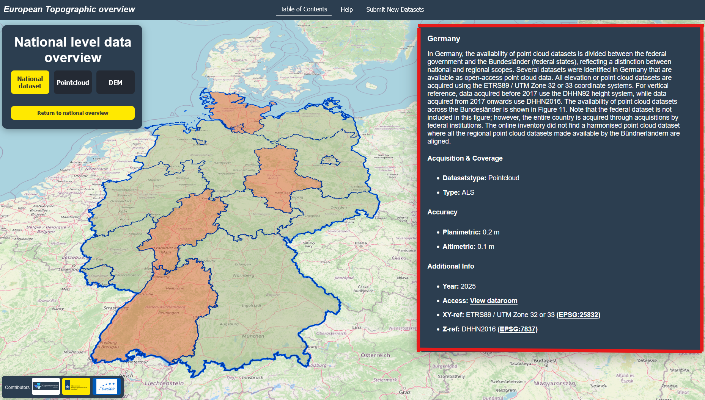

How to use European Point Clouds website
This platform helps you explore national and regional topographic and point cloud datasets across Europe. Follow the steps below — each section includes an explanation and an example GIF.
1. Move and Zoom the Map
Drag the map with your mouse to move, scroll to zoom in/out, or use pinch gestures on touch devices. Hold Shift and drag to tilt and rotate the map.

2. Use the Table of Contents (TOC)
Open the left-hand panel to browse all available countries. You can filter with the search bar or click a category button to highlight only specific dataset types:
- Region – regional dataset
- Pointcloud – LiDAR datasets
- Digital Elevation Model – raster Digital Elevation Models
- No info – no open information
3. Select a Country
Click a country in the TOC list, or directly on the map. The map will highlight the country and show information in the right-hand panel. If regional data exists, a new panel with regions will appear.

4. Explore Detailed Information
When you select a country or region, details will appear: dataset type, accuracy, acquisition year, and links to the provider. The dataroom link, refers you to the landing page where you can download the elevation datasets.

5. Return to Overview
Use the Return to European Overview button in the TOC to reset the map and return to the full European overview.